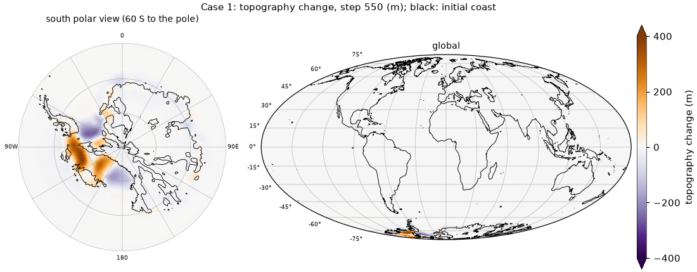
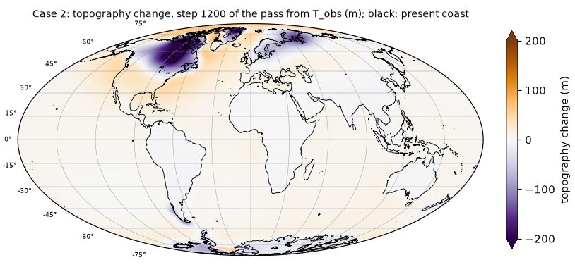
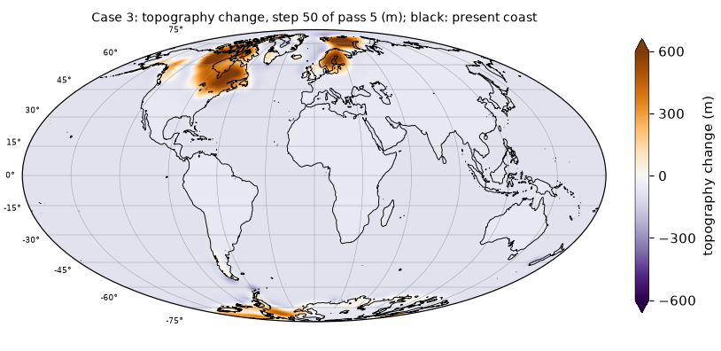
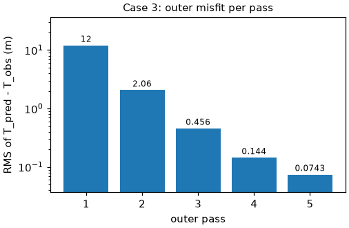

Running the benchmark cases¶
This page gives the input preparation and run commands of the three benchmark cases for both solvers.
Data provenance, the corrupt Earth-model file of Case 2 and the total-versus-grounded ice issue of
Case 1 are documented in Benchmark provenance. The scripts in examples/ contain the
commands below; each takes the prepared INPUT_FILES directory from the environment variable INPUT
and the thread count from THREADS (default 8), builds the Fortran executable with the matching CASE
preset (into fortran/build/<case>/) and runs in the current directory. The Fortran build uses the
active toolchain (Installation); set CONDA_ENV=slevolve-fortran instead of
activating it, if you prefer. The Python commands need the Python environment of the same page.
Summary (wall times of the Python reference runs on an Apple M4 Max with 8 threads):
| case | run | Python wall time | memory and disk |
|---|---|---|---|
| 1 | forward run, 550 x 1 yr | 20 s | 2.2 GB of ice input (.bin); every output field is 4 MB per step, so restrict the steps (SLEVOLVE_SNAP) or fields (--save-fields) |
| 2 | one outer pass, 1200 x 200 yr | 38 s | ice cache of about 5 GB in python/cache/ (Python) |
| 3 | first-pass topography 13 s + 5 outer passes 18 s | 31 s | 0.5 GB of ice input (text) |
Case 1: Antarctic forward run (550 × 1 yr)¶
Data (about 9 GB to download):
- Dryad, Yousefi et al. (2022), doi:10.5061/dryad.ncjsxkswm:
fort.92_85_MISI.nc.xz(8.9 GB; decompress withxz -d), the ice thickness of the ice-sheet run. - OSF, Han et al. (2022), doi:10.17605/OSF.IO/8PTFM, folder
Data/AIS_550yr/:INPUT_AIS history.zip(127 MB; the archived grounded-ice filesAISload_gd_Run85_0_0_0.._550; unzip it withunzip "INPUT_AIS history.zip", quoting the name because of the space),INPUT_Others/prem_512.l60K2C.sum18p6.dum19p2.tz19p4.lm22(also shipped inlovenum/), and fromOUTPUTS_StandardSimulations.zip(2.0 GB) only the memberOUTPUTS_StandardSimulations/dt=1yr/topo0(unzip -j OUTPUTS_StandardSimulations.zip 'OUTPUTS_StandardSimulations/dt=1yr/topo0'), saved astopo0_archive.
Input tree (/path/to/INPUT_FILES)
icemodel/AISload_gd_Run85_0_0_<k>.bin, k = 0..550: the total ice, built with
python3 tools/build_case1_total_ice.py --nc /path/to/fort.92_85_MISI.nc \
--grounded /path/to/grounded_bin --out /path/to/case1
# -> /path/to/case1/total/icemodel/ (and totalY/, a pure resampling used as a control)
--grounded is a directory with the archived grounded-ice files of the OSF archive converted to
.bin, either with the Fortran tool built next to every executable
(fortran/build/case1/make_cache 512 OUTDIR FILE...) or, without a Fortran build, with Python:
python python/tools/text2npy.py --dir GROUNDED_TEXT --pattern 'AISload_gd_Run85_0_0_*' --outdir OUTDIR
followed by python -c "import glob, numpy as np; [np.load(f).astype('<f8').tofile(f[:-4] + '.bin') for f in glob.glob('OUTDIR/*.npy')]"
(the .bin payload equals the .npy payload). Despite the _gd_ prefix, the files in
total/icemodel/ hold the total ice.
* earthmodel/prem_512.l60K2C.sum18p6.dum19p2.tz19p4.lm22: the Love-number file distributed with
Han et al. (2022), included unchanged in lovenum/. examples/case1_forward.sh copies it there if
it is missing.
* grid/GLlat_512.txt, grid/GLlon_512.txt (written by tools/make_grid.py if missing).
* others/topo0_archive (text; optionally converted with
python3 python/tools/text2npy.py /path/to/INPUT_FILES/others/topo0_archive).
Run
INPUT=/path/to/INPUT_FILES bash examples/case1_forward.sh fortran
INPUT=/path/to/INPUT_FILES bash examples/case1_forward.sh python
The Fortran branch is equivalent to
CASE=case1 bash fortran/build.sh
mkdir -p RUN_case1/OUTPUT_SLM RUN_case1/ICELOAD_SLM
ln -sfn /path/to/INPUT_FILES RUN_case1/INPUT_FILES
cp fortran/build/case1/exe RUN_case1/ && cd RUN_case1
OMP_NUM_THREADS=8 OMP_STACKSIZE=32M SLEVOLVE_INNER=extrap \
SLEVOLVE_SNAP=550 SLEVOLVE_SNAP_FIELDS=tgrid ./exe 550
and the Python branch to
python3 python/run_ais.py --steps 550 --threads 8 --sht ducc --lmax 511 --opt all --inner extrap \
--icedir /path/to/INPUT_FILES/icemodel \
--topo /path/to/INPUT_FILES/others/topo0_archive \
--earth /path/to/INPUT_FILES/earthmodel/prem_512.l60K2C.sum18p6.dum19p2.tz19p4.lm22 \
--save-fields tgrid,ocean --out OUT_case1_py
Check either output against the shipped reference:
python tests/check_reference.py --case case1 --dir OUT_case1_py # Python
python tests/check_reference.py --case case1 --dir RUN_case1/OUTPUT_SLM # Fortran
The Fortran example writes only tgrid0 and tgrid550, so for it check_reference.py compares
dtopo_550 and the inner-iteration counts (from the text file OUTPUT_SLM/numiter), reports the
other reference fields as SKIP and lists them at the end. For the Fortran example output it
reported dtopo_550 max |diff| 8.2e-12 m and identical iteration counts (2099). To compare all
fields, run the Fortran example with SLEVOLVE_SNAP=1,100,550 SLEVOLVE_SNAP_FIELDS=tgrid,ocean.
Expected result. Topography change at step 550 (reference/case1/dtopo_550.npy, south polar
stereographic view and global Mollweide view; colormap PuOr_r with fixed limits +-400 m as in
Fig. 3a of the paper, arrows on the colour bar for values beyond; maximum 390 m; black line: coast of
the initial topography):

The unloading of the West Antarctic ice sheet raises the bed by up to 390 m after 550 years on this low-viscosity Earth, with subsidence where ice thickens. Area-weighted RMS 12.3 m; 2099 inner iterations in 550 steps.
Variants
- Legacy-equivalent run (exact, comparable to the legacy solver): the same with
SLEVOLVE_INNER=off(Python:--inner off). - All snapshots: omit
SLEVOLVE_SNAP(or setSLEVOLVE_SNAP=all).
Case 2: two glacial cycles (1200 × 0.2 kyr), one pass¶
Data (about 640 MB): OSF, Han et al. (2022), doi:10.17605/OSF.IO/8PTFM:
Data/SeaLevelModel_TwoGlacialCycle_Simulations/INPUT_NHIS2GC.zip (630 MB; iceload0 ..
iceload1200) and Data/CoupledModel_OneGlacialCycle_Simulations/INPUT_Others/etopo2_512_ice6gC
(8.4 MB). The Love numbers are shipped (lovenum/prem_512.l120C.ump5.lm5).
Input tree
bash tools/prepare_case2_inputs.sh ICEDIR TOPO EARTH GRIDDIR /path/to/INPUT_FILES
ICEDIR:iceload0..iceload1200extracted unchanged fromINPUT_NHIS2GC.zip(OSF archive).TOPO:etopo2_512_ice6gC(OSF archive).EARTH: the Love-number file for the Case 2 Earth model,lovenum/prem_512.l120C.ump5.lm5(the archived file is corrupt; see Benchmark provenance). Thecase2preset compiles in thisPLANETMODELname; rebuild withPLANETMODEL=<your file name>to use another file.GRIDDIR: directory withGLlat_512.txtandGLlon_512.txt(written bytools/make_grid.pyif they are missing).- The script needs
make_cache: build first withfortran/build.sh(e.g.CASE=case2), or setMAKE_CACHE.
Settings (CASE=case2): L_sim = 240000, dt1..4 = 200, norder = 511,
initial_topo = .false., topomodel = etopo2_512_ice6gC, driver run_outer_plus.
Run (first outer pass from the present topography):
INPUT=/path/to/INPUT_FILES bash examples/case2_one_pass.sh fortran
INPUT=/path/to/INPUT_FILES bash examples/case2_one_pass.sh python
The Fortran branch builds with CASE=case2, sets up RUN_case2/ and runs
OMP_NUM_THREADS=8 OMP_STACKSIZE=32M SLEVOLVE_INNER=extrap ./exe 1200 1. The Python branch runs
python3 python/run_outer.py --iters 1 --inner extrap --opt all --lmax 511 --threads 8 \
--inputs /path/to/INPUT_FILES --icepfx iceload --nfiles 1201 --dt 200 \
--topo-pres /path/to/INPUT_FILES/others/etopo2_512_ice6gC \
--earth /path/to/INPUT_FILES/earthmodel/prem_512.l120C.ump5.lm5 --save-steps 1,600,1200 --out OUT_case2_py
python tests/check_reference.py --case case2 --dir OUT_case2_py
The paper reports this case as one pass only.
Expected result. Topography change at step 1200 of the pass from the present topography
(reference/case2/dtopo_1200.npy, Mollweide view; colormap PuOr_r with fixed limits +-200 m, the
99th percentile of |change| (173 m) rounded up, arrows on the colour bar for values beyond; maximum
283 m; black line: present coast):

The largest changes are under the former North American and Eurasian ice sheets. Area-weighted RMS
27.4 m, which is also the outer misfit of this pass (reference/case2.json, misfit_rms).
Case 3: ICE-NADI-1 (50 × 0.5 kyr), full outer iteration¶
Data: Zenodo, Lucas et al. (2026), doi:10.5281/zenodo.21464139: ICE-NADI-1.nc; and from the
OSF archive of Case 2 the present topography etopo2_512_ice6gC (8.4 MB). The Love numbers are
shipped (lovenum/prem_512.l96C.ump3.lm1).
Input tree
python3 tools/prepare_case3_nadi.py --out /path/to/INPUT_FILES --ice-nc /path/to/ICE-NADI-1.nc \
--grid /path/to/grid --topo /path/to/etopo2_512_ice6gC # --grid optional (make_grid.py)
mkdir -p /path/to/INPUT_FILES/earthmodel
cp lovenum/prem_512.l96C.ump3.lm1 /path/to/INPUT_FILES/earthmodel/
This writes icemodel/nadi_0..50, others/topo_pres, grid/. Store the ICE-NADI-1 ice as <f8:
it is not f4-lossless (File formats §4).
Run
INPUT=/path/to/INPUT_FILES bash examples/case3_ice_age.sh fortran 5 # 5 outer passes
INPUT=/path/to/INPUT_FILES bash examples/case3_ice_age.sh python 5
The script first builds the segmented, partially relaxed initial topography (skipped if
T0_segmented.npy exists in the current directory):
python3 python/init_topo_segmented.py --inputs /path/to/INPUT_FILES --icepfx nadi_ --nfiles 51 \
--dt 500 --earth /path/to/INPUT_FILES/earthmodel/prem_512.l96C.ump3.lm1 --lmax 511 \
--out T0_segmented.npy
--dt is the step length in years (500), as for run_outer.py; the script converts it to kyr
internally and prints both. The fixed point starts from the present topography unless --start is
given; a .json file with the segments is written next to the output.
Fortran (in-process outer driver): the script builds with CASE=case3 and calls
OMP_NUM_THREADS=8 OMP_STACKSIZE=32M SLEVOLVE_INNER=extrap SLEVOLVE_REUSE=warm INPUT=/path/to/INPUT_FILES \
bash examples/run_outer_mem.sh case3 case3 5 T0_segmented.npy
examples/run_outer_mem.sh RUNNAME BUILDTAG NOUTER TOPO0 [LAST=50] runs fortran/build/BUILDTAG/exe
in ./runs/RUNNAME. With
TOPO0=pres it runs passes 1..NOUTER from the present topography. Otherwise it seeds
tgrid0_1 = TOPO0 (.npy, <f8) and pred_pres_topo_1 = the present topography, then runs passes
2..NOUTER+1 in one process (./exe LAST K0 K1). The present topography is TOPO_PRES=<path>
(default INPUT/others/topo_pres, the Case 3 file): a .npy file (or <path>.npy when it exists) is
read directly, any other file as grid text with the build's text2npy (grid NLAT x NLON, default
512 x 1024). The wrapper needs no Python (bash, od, awk). The log is run_mem.log.
Python:
python3 python/run_outer.py --iters 5 --inner extrap --reuse warm --lmax 511 --threads 8 \
--inputs /path/to/INPUT_FILES --earth /path/to/INPUT_FILES/earthmodel/prem_512.l96C.ump3.lm1 \
--topo0 T0_segmented.npy --out OUT_case3_py
Check the result:
python tests/check_reference.py --case case3 --dir OUT_case3_py --topo-pres /path/to/INPUT_FILES/others/topo_pres
Expected result. Topography change at step 50 of pass 5 (reference/case3/dtopo_p5_s50.npy,
Mollweide view; colormap PuOr_r with fixed limits +-600 m, the 99th percentile of |change| (512 m)
rounded up, arrows on the colour bar for values beyond; maximum 1025 m; black line: present coast):

From 25 ka to the present the topography rises by up to about 1 km under the former North American and Fennoscandian ice and falls by about 100 m over the oceans, the deglacial rise of sea level relative to the sea floor.

The outer misfit, the area-weighted RMS of predicted minus observed present topography, falls from
12.0 m after pass 1 to 0.074 m after pass 5 (reference/case3.json, misfit_rms).
The figures of this page are made with
python tools/plot_reference.py --outdir DIR --topo1 T1 --topo2 T2 --topo3 T3 from reference/,
where T1, T2, T3 are the topographies whose 0 m contour is drawn as the coast (Case 1:
INPUT_FILES/others/topo0_archive; Case 2: etopo2_512_ice6gC; Case 3: topo_pres); how the runs correspond to the paper is in
Reproducing the published results.
Next: Setting up a new case.